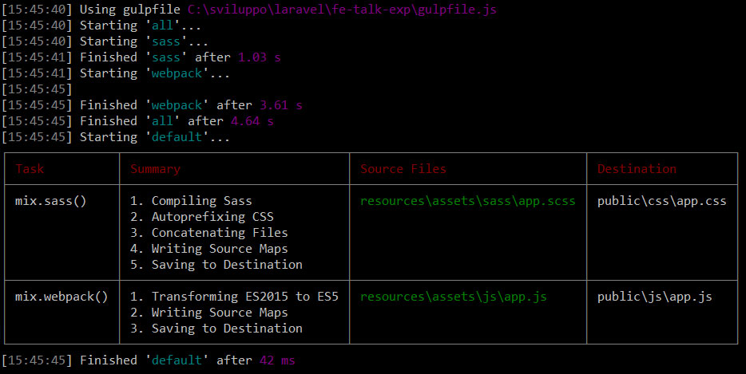
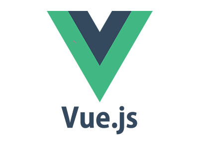
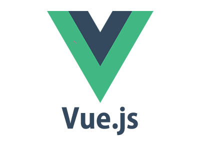

Frontend with Laravel
Elixir
Nicola Bosco
Php full-stack developer (with Frontend Attitudes)
at Intesys
Introducing Laravel
Laravel è un framework open source di tipo MVC scritto in PHP per lo sviluppo di applicazioni web, creato nel 2011 da Taylor Otwell come derivazione di Symfony.
Attualmente alla versione 5.3 è uno dei framework PHP più utilizzati al momento.
A little Laravel overview
- MVC framework, basato su Composer
- Sintassi espressiva e intuitiva.
- RestFul routing (VERB)
- Eloquent ORM, Querybuilder, Migrations per versionamento Db
- Blade template engine
- Unit testing con PHPUnit
- Grande community, eccellente documentazione e tutorial video su Laracast
Blade template engine
Layouts + Sections
App Name - @yield('title')
@section('sidebar')
This is the master sidebar.
@show
@yield('content')
Extending a layout
@extends('layouts.app')
@section('title', 'Page Title')
@section('sidebar')
@parent
This is appended to the master sidebar.
@endsection
Control structures (If, Loops)
@if (count($records) >= 1)
I have records!
@else
I don't have any records!
@endif
@foreach ($users as $user)
This is user {{ $user->id }}
@endforeach
Service Injection
@inject('metrics', 'App\Services\MetricsService')
Monthly Revenue: {{ $metrics->monthlyRevenue() }}.
Bypass for Javascript Frameworks
Hello, @{{ name }}.
@verbatim
Hello, {{ name }}.
@endverbatim
A help for Frontenders - Elixir
Elixir è un'estensione di Gulp e fornisce una API che semplifica la configurazione del proprio task runner su Laravel.
Installation
npm installE' già presente un package.json per l'installazione iniziale
Configuration
Si utilizza il gulpfile.js
Configuration
gulpfile.js iniziale
const elixir = require('laravel-elixir');
require('laravel-elixir-vue');
/*
|-----------------------------------------------------------
| Elixir Asset Management
|-----------------------------------------------------------
*/
elixir(mix => {
mix.sass('app.scss')
.webpack('app.js');
});
Execution
Singola esecuzione dei task
gulpSingola esecuzione dei task per l'ambiente di produzione
gulp --productionEsecuzione dei task e refresh alla modifica degli assets
gulp watchResult details 
Tasks
Working with Css
Sass
Singolo file
// da /resources/assets/sass/app.scss a /public/css/app.css
elixir(function(mix) {
mix.sass('app.scss');
});Di default Elixir legge gli assets da
/resources/assets/[TYPE]//public/[TYPE]/Sass
Vengono eseguiti l'autoprefixer, generati i source maps e minificato il codice se si tratta di una compilazione per la produzione
gulp --productionSass - Opzioni
Files multipli
// da /resources/assets/sass/.. a /public/css/app.css
elixir(function(mix) {
mix.sass(['app.scss','fixes.scss']);
});Destinazione css custom
// da /resources/assets/sass/app.scss a /public/another-css/another-app.css
elixir(function(mix) {
mix.sass('app.scss','public/another-css/another-app.css');
});Less
// da /resources/assets/less/app.less a /public/css/app.css
elixir(function(mix) {
mix.less('app.less');
});Abbiamo la stessa flessibilità di utilizzo di mix.sass()
Stylus
// da /resources/assets/stylus/app.styl a /public/css/app.css
elixir(function(mix) {
mix.stylus('app.styl');
});Abbiamo la stessa flessibilità di utilizzo di mix.sass()
Plain Css
// da /resources/assets/css/.. a /public/css/app.css
elixir(function(mix) {
mix.styles(['app.css','fixes.css']);
});Abbiamo la stessa flessibilità di utilizzo di mix.sass()
Working with Javascipt
Un suggerimento di Laravel: Webpack + Vue
 

Webpack
// From resources/assets/js/app.js to public/js/app.js
elixir(function(mix) {
mix.webpack('app.js');
});Di default viene compilato ES2015 in ES5, generati i source maps e minificato il codice se si tratta di una compilazione per la produzione
gulp --productionSi può utilizzare il webpack.config.js per configurare Webpack.
Rollup
"the next-generation JavaScript module bundler"
// From resources/assets/js/app.js to public/js/app.js
elixir(function(mix) {
mix.rollup('app.js');
});
Si può utilizzare il rollup.config.js per configurare Rollup.
Browserify (Laravel 5.2 docs)
// From resources/assets/js/app.js to public/js/app.js
elixir(function(mix) {
mix.browserify('app.js');
});
Plain Scripts
// From resources/assets/js/products.js + dashboard.js to public/js/app.js
elixir(function(mix) {
mix.scripts([
'products.js',
'dashboard.js'
]);
});
Concatenazione dei .js contenuti in una cartella
// From resources/other-assets/js/*.js to public/js/app.js
elixir(function(mix) {
mix.scriptsIn('resources/other-assets/js/');
});
Other Tasks
Copying Files & Directories
//File copy from vendor/foo/bar.css to public/css/bar.css
elixir(function(mix) {
mix.copy('vendor/foo/bar.css', 'public/css/bar.css');
});
//Directory copy from vendor/foo/ to public/css/
elixir(function(mix) {
mix.copy('vendor/foo', 'public/css');
});Versioning / Cache busting
//In gulpfile.js
elixir(function(mix) {
mix.version('css/all.css');
});
//In the blade view
//The resulting html
BrowserSync
Refresh automatico del browser alla modifica degli assets tramite gulp watch.
//with local development on project.dev
elixir(function(mix) {
mix.browserSync({
proxy: 'project.dev' //Local Url of your application
});
});
Calling gulp tasks
elixir(function(mix) {
mix.task('deploy');
});
Custom Tasks
var Task = Elixir.Task;
Elixir.extend('speak', function(message) {
new Task('speak', function() {
return gulp.src('').pipe(shell('say ' + message));
})
.watch('./app/**'); //With watcher on gulp watch
});
elixir(function(mix) {
mix.speak('Hello World');
}
Considerations
- Gli elementi proposti da Elixir, ed Elixir stesso, sono suggerimenti di Laravel.
- Probabilmente sono i backender a trarre più beneficio da Elixir.
- Nel caso di single page apps con un servizio API backend valutare l'utilizzo di Lumen (minimal Laravel).
Resouces
Thanks!